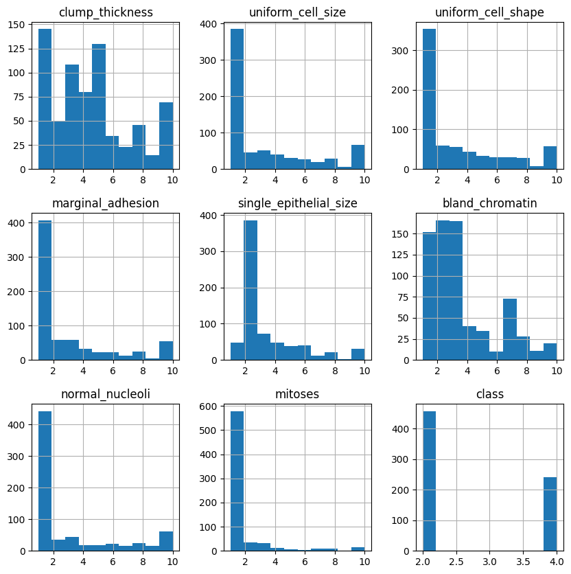
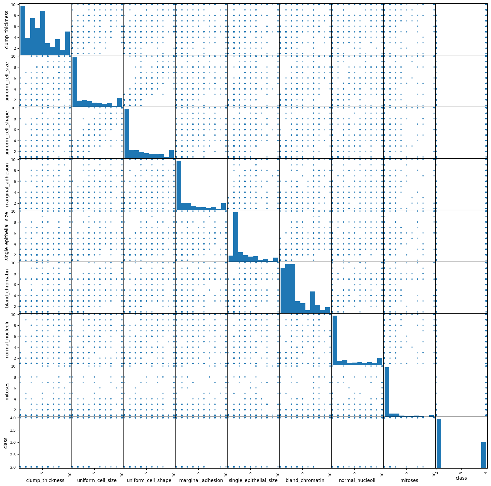

Binary tumor classification (benign/malignant) on the Wisconsin breast cancer dataset, comparing K-Nearest Neighbors and Support Vector Machine classifiers.
scikit-learnSVMKNNClassificationLIVE — runs the real trained model in your browser
699records, 9 features
—KNN test accuracy
—SVM test accuracy
UCIWisconsin Breast Cancer (Original)
Try it — classify a tumor
These are the exact two models from the notebook (KNN k=5, SVM with an RBF kernel), retrained on the same public dataset the notebook loads from UCI. Both run for real in your browser — KNN does a real nearest-neighbor vote over the actual training set; the SVM evaluates its actual support vectors.
9 features, scale 1–10 (as in the original UCI dataset)
loading real model weights…
KNN prediction (k=5 real nearest neighbors)
—
SVM prediction (real RBF decision function)
—
Key findings
Dataset: 699 patient records with 9 tumor features (Wisconsin Breast Cancer dataset, loaded from the same public UCI source the notebook uses).
KNN reached strong accuracy on the held-out test set with ~0.98 precision/recall.
The default RBF-kernel SVM lagged badly by comparison — it effectively defaulted to predicting the majority (benign) class, with near-zero recall on the malignant class.
Takeaway: for this feature set, a simple KNN classifier generalized far better than an SVM with default (untuned) settings — a reminder that "more sophisticated model" doesn't always win without tuning.
Charts

Feature distribution histograms across the 9 tumor attributes

Pairwise feature scatter matrix, colored by diagnosis